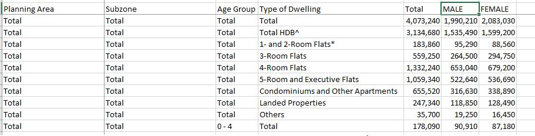
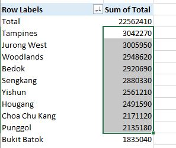
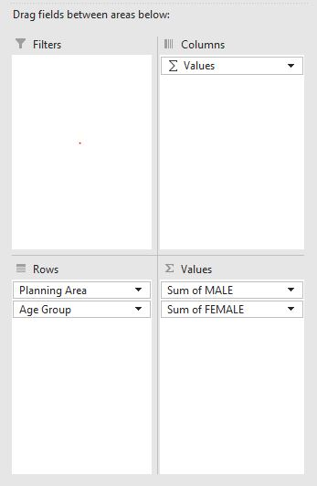
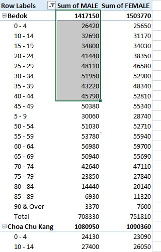
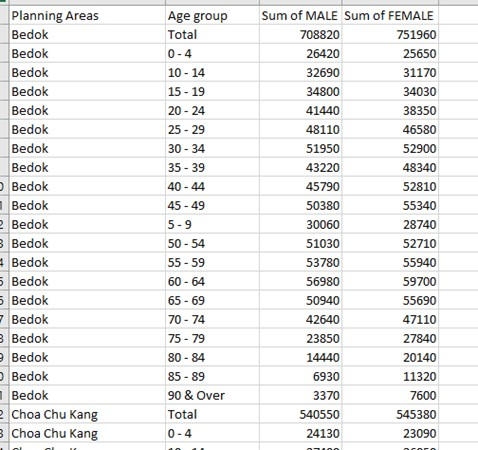

Data Preparation
The Data
Singapore Residents by Planning Area / Subzone, Age Group, Sex and Type of Dwelling, June 2022 should be used to prepare the analytical visualisation. It is available at Department of Statistics, Singapore(in short SingStat).
Let’s examine the data.
We have 1 excel dataset under xlsx format. Inside we found 3 worksheets: 2022(Total) / 2022 (Male) / 2022 (Female).
Each worksheet has 5 columns as followed:

Planning Areas represents the names for each planning areas in Singapore.
Subzone further divides Planning area into small zones.
Age group represents the age groups for population between 0 and 90, with interval of 5 years (0-4 / 5-9 / 10-14 etc…)
Type of Dwelling represents the types of housing in this census.
Total is the number of populations for each categories.
3 worksheets, represents numbers for Male populations, Female Population and Total.
Our tasks would be creating visualizations from these raw data. Our choices of visualization will be using Age-Sex pyramid.
Data Preparation
First, Age-sex pyramid requires data to be split into male and females. The exercise also requires to split into 9 different planning areas.
First we will copy the columns which contains the total number of male ( from 2022 (Male) worksheet ) and total number of female ( from 2022 (Female)) worksheet to 2022 (Total) worksheet, adding on as 6th and 7th columns.

From here, we can create Pivot table which includes all the data under this worksheet.

Select entire worksheet 2022 (Total) as Data source

There will be a new worksheet created, as Pivot table.
Now we will drag Planning Area to Rows box for the Pivot table. And we will choose Total as Values box 
Now we shall right click on the Sum of Total column and Sort from Largest to smallest. We will now select 9 most populous planning areas of Singapore. We shall filter and keep these 9 areas only.

Next step, we drag in Males and Females (drag and drop to Pivot table Values box) and remove the Sums of Total from this Values box.
We will also add in the Age Group, under Rows box.

We will have a table of 9 most populous areas in Singapore, and their age-group smaller breakdown.

We will filter out the Total from these age group breakdown. (Because the total for each areas are already in bolden first row, so we don’t need this last row of Total anymore.
We shall copy this table and paste-special (values only) to a new worksheet.
Insert a new column in between Rows Label and Sums of Male.
Copy the age group over, we will separate: First column is only for name of Planning Areas ( Bedok, Choa Chu Kang, Hougang etc…) and second column will be only for Age Group.
Our final worksheet, we will have a similar worksheet like this ( under worksheet Sheet1)
